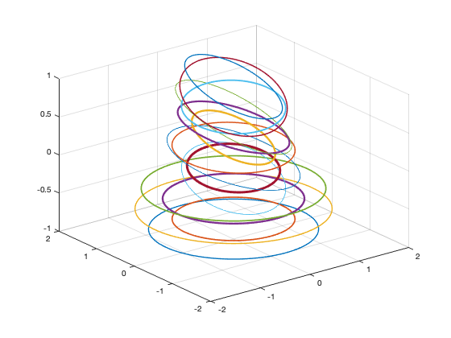

GENERATEELLIPSES Generate random ellipses
Contents
Form
GenerateEllipses; % demo [d, v] = GenerateEllipses(a,b,phi,t,n,nC,nP)
Description
Generates random ellipses given a range of sizes and max rotation. The number of ellipses and circles must be specified; the total number generated is their sum. Opens a figure which displays the ellipse images in an animation after they are generated.
Inputs
a (1,2) Range of a sizes of ellipse b (1,2) Range of b sizes of ellipse phi (1,1) Max rotation angle of ellipse t (1,1) Max line thickness in the plot of the circle n (1,1) Number of ellipses nC (1,1) Number of circles nP (1,1) Number of pixels, image is nP by nP
Outputs
d {:,2} Ellipse data and image frames
v (1,:) Boolean for circles, 1 (circle) or 0 (ellipse)See also
plot3, getframe, rgb2gray, imagesc, colormap
function [d, v] = GenerateEllipses(a,b,phi,t,n,nC,nP) if( nargin < 1 ) Demo; return end nE = n+nC; d = cell(nE,2); r = 0.5*(mean(a) + mean(b))*rand(1,nC)+a(1); a = (a(2)-a(1))*rand(1,n) + a(1); b = (b(2)-b(1))*rand(1,n) + b(1); phi = phi*rand(1,n); cP = cos(phi); sP = sin(phi); theta = linspace(0,2*pi); c = cos(theta); s = sin(theta); m = length(c); t = 0.5+(t-0.5)*rand(1,nE); aMax = max([a(:);b(:);r(:)]); % Generate circles for k = 1:nC d{k,1} = r(k)*[c;s]; end % Generate ellipses for k = 1:n d{k+nC,1} = [cP(k) sP(k);-sP(k) cP(k)]*[a(k)*c;b(k)*s]; end % True if the object is a circle v = zeros(1,nE); v(1:nC) = 1; % 3D Plot NewFigure('Ellipses'); z = -1; dZ = 2*abs(z)/nE; o = ones(1,m); for k = 1:length(d) z = z + dZ; zA = z*o; plot3(d{k}(1,:),d{k}(2,:),zA,'linewidth',t(k)); hold on end grid on rotate3d on % Create images - this might take a while for a lot of images f = figure('Name','Images','visible','on','color',[1 1 1]); ax1 = subplot(1,2,1,'Parent', f, 'box', 'off','color',[1 1 1] ); ax2 = subplot(1,2,2,'Parent',f); grid on; for k = 1:length(d) % Plot the ellipse and get the image from the frame plot(ax1,d{k}(1,:),d{k}(2,:),'linewidth',t(k),'color','k'); axis(ax1,'off'); axis(ax1,'equal'); axis(ax1,aMax*[-1 1 -1 1]) frame = getframe(ax1); % this call is what takes time imSmall = rgb2gray(imresize(frame2im(frame),[nP nP])); d{k,2} = imSmall; % plot the resulting scaled image in the second axes imagesc(ax2,d{k,2}); axis(ax2,'equal') colormap(ax2,'gray'); title(ax2,['Image ' num2str(k)]) set(ax2,'xtick',1:nP) set(ax2,'ytick',1:nP) colorbar(ax2) pause(0.2) end close(f) function Demo % Built-in demo a = [0.5 1]; b = [1 2]; phi = pi/4; t = 3; n = 10; nC = 5; nP = 32; GenerateEllipses(a,b,phi,t,n,nC,nP);
Copyright
Copyright (c) 2019 Princeton Satellite Systems, Inc. All rights reserved.